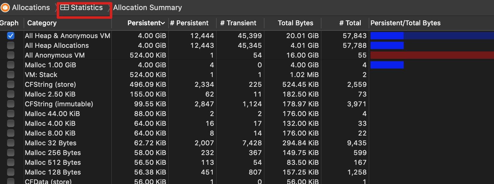
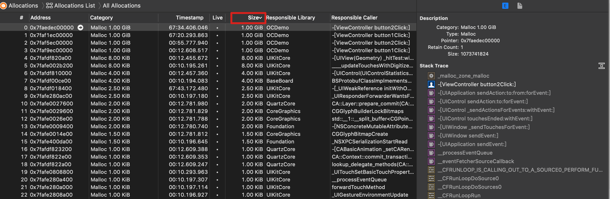
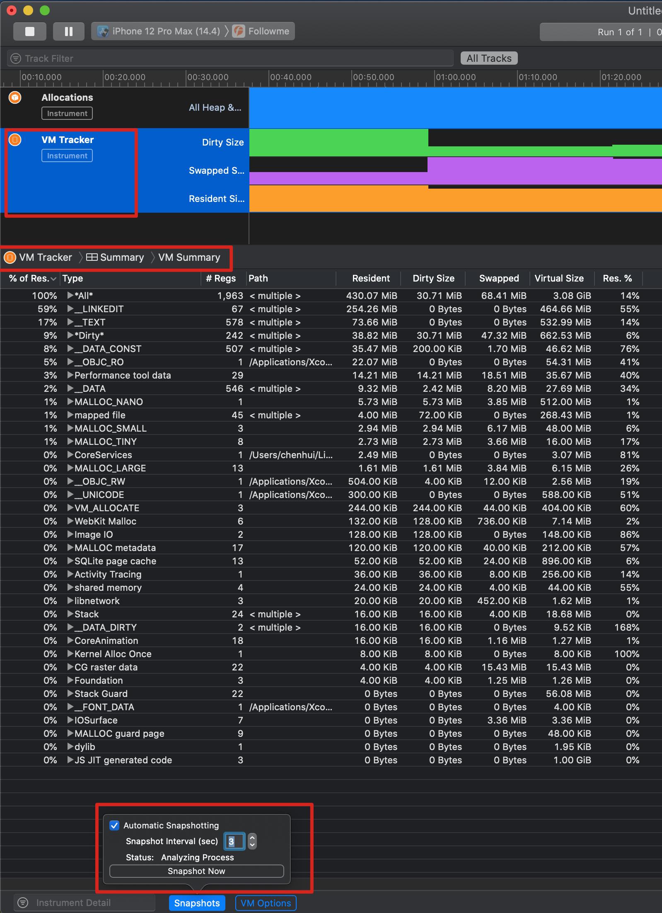
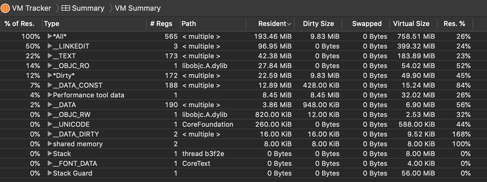
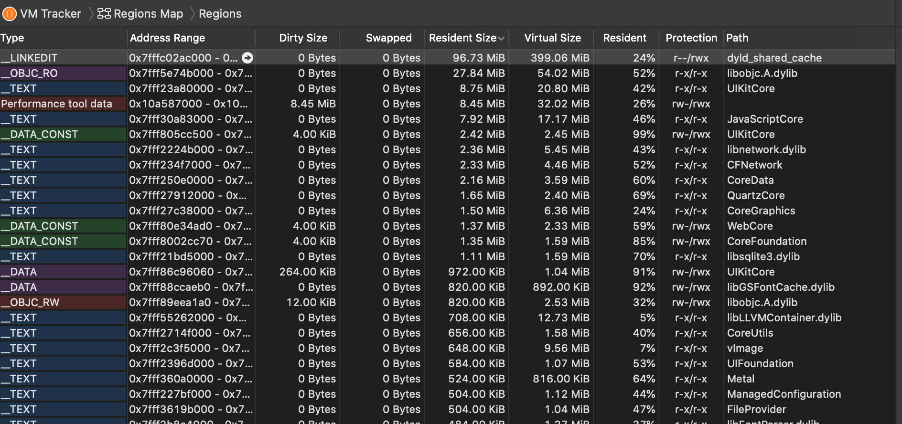

Instruments 之 Allocations
Allocations
Allocations 一般包含一个 VM Tracker
Statistics
直译：统计 的意思 表示当前系统的内存占用列表

All Heap Allocation
开发者手动申请的内存（堆），虚拟内存，这一部分是由开发者控制的。未使用的内存不会直接分配物理内存，只有使用了的内存才会在物理内存上分配空间。
All Anonymous VM
相对于All Heap Allocation，这里的是匿名的虚拟内存，开发者无法控制的内存。memory mapped file 、CALayer back store 好像都是在这里的
All Heap & Anonymous VM 指的就是 All Heap Allocation + All Anonymous VM
VM:ImageIO_PNG_Data
使用 [UIImage imageNamed:@"*.png"] 缓存的解压后的图片
VM:CG raster data
通过CG解压的图片.光栅化数据，也就是像素数据
Call Tree
显示调用函数，点击具体的函数能跳转到对应的代码
Invert Call Tree 倒置函数栈
Hide System Libraries 隐藏系统库
Allocations list
可以按照单次分配的内存大小排序，可以清楚的看到对应的调用栈

Generations
查看两个时间点之间的内存变化
VM Tracker
- 打开界面后，需要先启动
VM Tracker - 

Resident 指的是当前物理内存（已加载的代码段+脏内存）VM Region 一个 VM Region 是指一段连续的内存页（在虚拟地址空间里），这些页拥有相同的属性（如读写权限、是否是 wired，也就是是否能被 page out）VMObject 每个 VM Region 对应一个数据结构，名为 VM Object。
% of Res. 当前 Type 的 Resident 占 总 Resident 的比例Type 虚拟内存的类型# Regs VM Region 的个数，也就是 VMObject 的个数？Path VM Region 从哪个文件映射过来的Dirty Size 脏内存，也就是系统无法回收的内存Swapped Size OSX 中被交换的内存。iOS 没有交换区，此时的Swapped Size就是压缩内存Virtual Size 虚拟内存总大小Res. % 当前物理内存占虚拟内存的总大小
